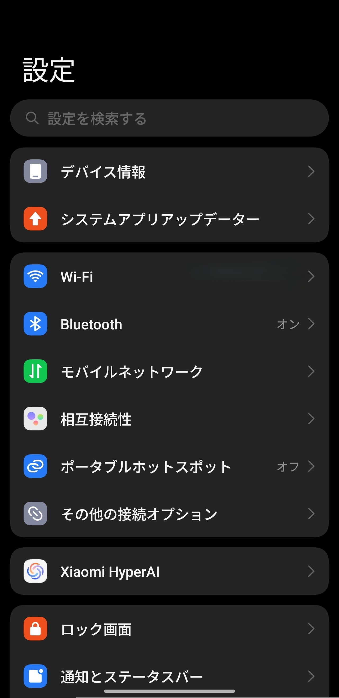
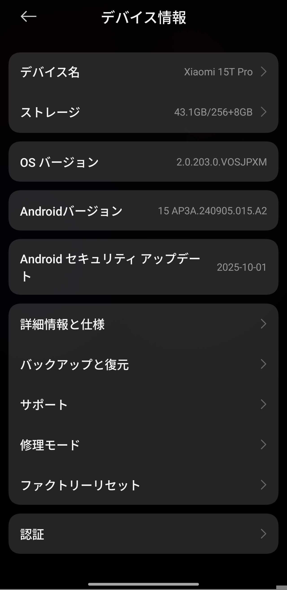
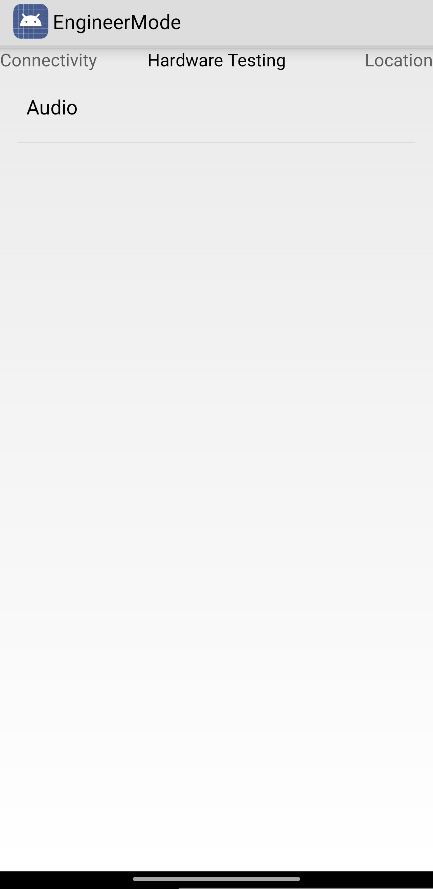
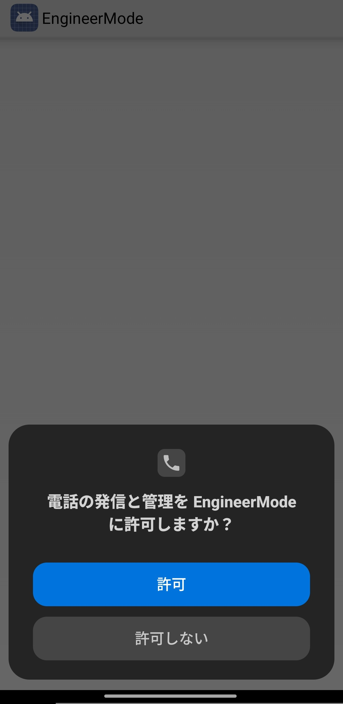
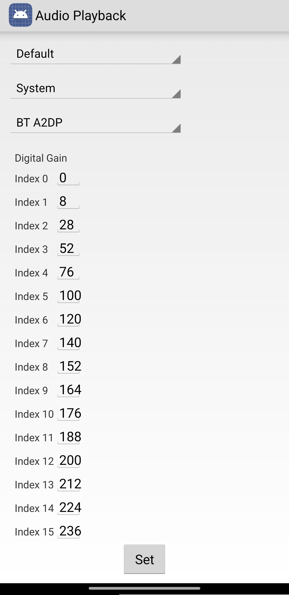
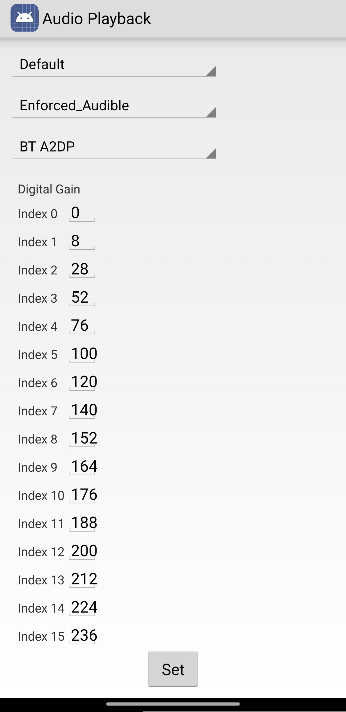
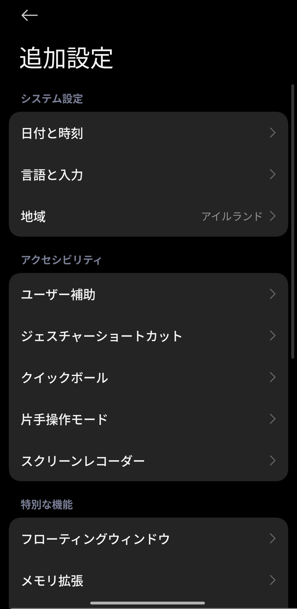
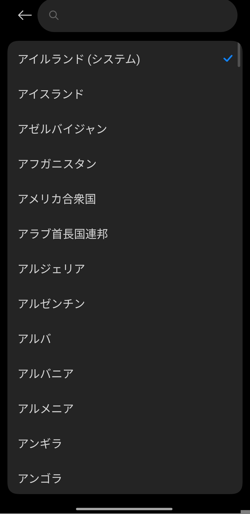

Xiaomi･Redmi･POCO｜シャッター音を消す方法【無音化】

SIMフリー版とDimensity搭載モデルに限りシャッター音が消せる
XiaomiとRedmi、POCOはSIMフリー版では地域設定を変更することで、Dimensity搭載モデルではMediaTek Engineer Modeで設定を変更することでそれぞれシャッター音が消せる。 ここではそれぞれの方法を解説する。
目次
Dimensity搭載モデルの方法

Xiaomi 15T Pro
Amazonで開く
Dimensityを搭載したモデルの場合、MediaTek Engineer Modeからシャッター音の音量を変更できる。
方法
1.設定アプリを開き、 "デバイス情報" を開く

2. "OSバージョン" を7回タップし、パスワードを入力する

3.電話アプリを開き、 "キーパッド" タブでコードを入力する
以下のコードを入力する。 これにより、MediaTek Engineer Modeが起動する。
*#*#3646633#*#*
4. "アプリの使用時のみ" をタップする

5. "アプリの使用時のみ" をタップする

6. "許可" をタップする

7. "許可" をタップする

8. "Hardware Testing" タブで "Audio" をタップする

9. "Volume" をタップする

10. "Audio Playback" をタップする

11. "System" を "Enforced_Audible" に変更する

12. "BT A2DP" を "Speaker" に変更する

13. "Index15" の値を "255" から "0" にする

この値がシャッター音の音量になる。
14. "Set" をタップする

15. "OK" をタップする

SIMフリー版の方法

POCO X7 Pro
Amazonで開く
SIMフリー版の場合、地域設定を日本と韓国以外にすることでシャッター音が消せるようになる。
方法
1.設定アプリを開き、 "追加設定" をタップする

2. "地域" をタップする

3. "地域" を日本と韓国以外にする

ここで地域を変更しても特に問題はない。
4.カメラアプリの設定画面を開く


5. "一般" タブで "シャッター音" をオフにする
SIMフリー版では地域が日本と韓国以外に設定されているとシャッター音の項目が現れる。

デメリット
･対応機種はSIMフリー版とDimensity搭載モデルのみ
キャリア版では地域設定を変更してもシャッター音の項目が現れず、MediaTek Engineer ModeはDimensity搭載モデルにしか存在しないため、Redmi Note 13 Pro 5Gのようなキャリア版のSnapdragon搭載モデルはこの方法が使えず、シャッター音は消せない。
プロフィール

高度情報社会の最先端を駆け抜ける

プライバシーポリシー
プライバシーポリシー
×